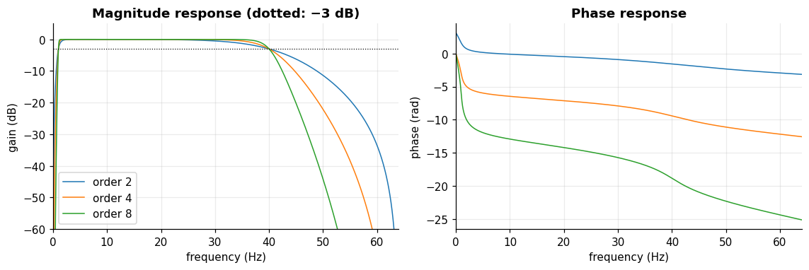
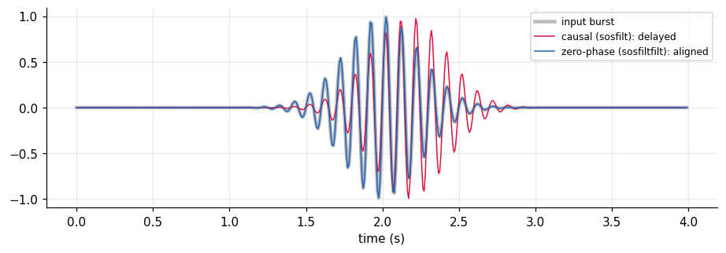
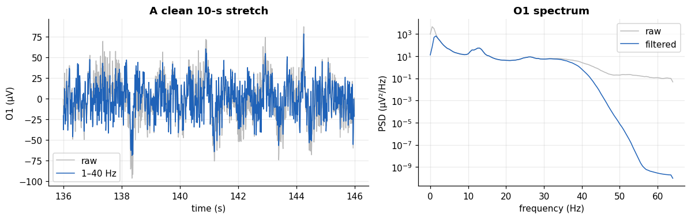
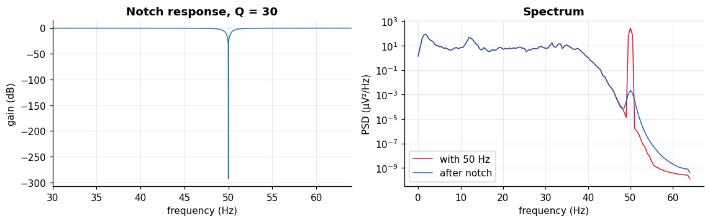
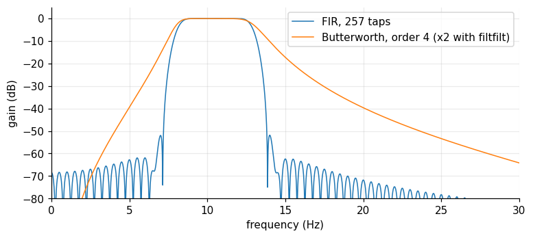

Digital filtering#
Learning objectives
- Describe a filter by its frequency response (gain and phase) and choose between low-pass, high-pass, band-pass and notch.
- Design Butterworth (IIR) and windowed-sinc (FIR) filters with SciPy and compare them.
- Explain why causal filters distort phase and when to use zero-phase filtering (
sosfiltfilt). - Clean the EEG with a 1–40 Hz band-pass and verify the result in time and frequency.
A filter is a system that keeps some frequencies and attenuates others. For EEG we filter to remove slow drifts (below 1 Hz), high-frequency noise (above 40 Hz) and, if present, mains interference, and to isolate one rhythm at a time.
What a filter does#
A linear time-invariant digital filter computes each output sample as a weighted sum of recent inputs and (for IIR filters) outputs: \[ y[n]=\sum_{k=0}^{M} b_k\,x[n-k]\;-\;\sum_{k=1}^{P} a_k\,y[n-k]. \] When all \(a_k=0\) it is an FIR filter (a convolution with the coefficients \(b_k\), always stable, can have exactly linear phase). Otherwise it is an IIR filter (recursive: efficient, sharp transitions with few coefficients, but the phase is non-linear). Its effect on a sinusoid of frequency \(f\) is a gain \(|H(f)|\) and a phase shift \(\angle H(f)\); this frequency response is the Fourier transform of the impulse response.
Definition: Cut-off frequency and roll-off
The cut-off frequency of a filter is where the gain falls to \(1/\sqrt2\approx0.707\) of the pass-band gain, i.e. −3 dB (half the power). The roll-off is how fast the gain decays beyond it. A Butterworth filter of order \(m\) has a maximally flat pass band and decays at \(20\,m\) dB per decade.
Designing a Butterworth band-pass#
We design 1–40 Hz band-pass filters of order 2, 4 and 8, in second-order sections (output="sos"), the numerically stable form that you should always prefer to the (b, a) form for high orders.
fig, ax = plt.subplots(1, 2, figsize=(10.5, 3.6))
for order in (2, 4, 8):
sos = signal.butter(order, [1, 40], btype="bandpass", fs=FS, output="sos")
w, h = signal.sosfreqz(sos, worN=4096, fs=FS)
ax[0].plot(w, 20 * np.log10(np.abs(h) + 1e-12), label=f"order {order}")
ax[1].plot(w, np.unwrap(np.angle(h)), label=f"order {order}")
ax[0].axhline(-3, color="k", ls=":", lw=.8); ax[0].set_ylim(-60, 5); ax[0].set_xlim(0, 64)
ax[0].set_xlabel("frequency (Hz)"); ax[0].set_ylabel("gain (dB)"); ax[0].set_title("Magnitude response (dotted: −3 dB)"); ax[0].legend()
ax[1].set_xlim(0, 64); ax[1].set_xlabel("frequency (Hz)"); ax[1].set_ylabel("phase (rad)"); ax[1].set_title("Phase response")
plt.tight_layout(); plt.show()

Higher orders give sharper edges (left) but a more severe, strongly non-linear phase (right). Note that the gain at 64 Hz is already very small: the filter also helps against high-frequency noise before analysis. We choose order 4, a standard compromise.
Causal versus zero-phase filtering#
A causal filter only uses past samples, so its output is delayed and distorted. Applying the same filter forwards then backwards (sosfiltfilt) cancels the phase exactly, at the price of using future samples (acceptable offline) and squaring the magnitude response. We test on a synthetic 10 Hz burst:
tt = np.arange(0, 4, 1 / FS)
burst = np.sin(2 * np.pi * 10 * tt) * np.exp(-((tt - 2) / 0.35) ** 2) # 10 Hz burst centred at t = 2 s
sos_a = signal.butter(4, [8, 13], btype="bandpass", fs=FS, output="sos")
y_causal = signal.sosfilt(sos_a, burst)
y_zero = signal.sosfiltfilt(sos_a, burst)
lag = (np.argmax(np.abs(signal.hilbert(y_causal))) - np.argmax(np.abs(signal.hilbert(y_zero))))
print(f"envelope peak delay of the causal output: {lag} samples = {lag / FS * 1e3:.0f} ms")
fig, ax = plt.subplots(figsize=(10, 3))
ax.plot(tt, burst, color="#bbbbbb", lw=3, label="input burst")
ax.plot(tt, y_causal, color="crimson", label="causal (sosfilt): delayed")
ax.plot(tt, y_zero, color="#1f62b8", label="zero-phase (sosfiltfilt): aligned")
ax.set_xlabel("time (s)"); ax.legend(fontsize=8, loc="upper right"); plt.show()
envelope peak delay of the causal output: 23 samples = 180 ms

The red causal output is shifted to the right by about 180 ms, while the zero-phase output (blue) stays aligned with the burst. For offline analysis, where when an event happens matters, always use zero-phase filtering. For real-time applications (neurofeedback) a causal filter is unavoidable, and its delay must be accepted.
Cleaning the EEG: 1–40 Hz#
We apply a 4th-order zero-phase band-pass to all 14 channels. The high-pass edge at 1 Hz removes the slow drifts that dominated the spectrum in Chapter 6, and the low-pass edge at 40 Hz removes the noise above the useful EEG band.
def bandpass(x, lo, hi, order=4, axis=-1):
"""Zero-phase Butterworth band-pass (lo, hi in Hz) applied along `axis`."""
sos = signal.butter(order, [lo, hi], btype="bandpass", fs=FS, output="sos")
return signal.sosfiltfilt(sos, x, axis=axis)
Xf = bandpass(X, 1, 40) # filtered copy of all channels, (14, N)
i = CH.index("o1")
fig, ax = plt.subplots(1, 2, figsize=(11, 3.6), gridspec_kw={"width_ratios": [1.2, 1]})
ts_, sl = np.arange(len(X[0])) / FS, slice(start * FS, (start + 10) * FS)
ax[0].plot(ts_[sl], X[i, sl], color="#bbbbbb", label="raw"); ax[0].plot(ts_[sl], Xf[i, sl], color="#1f62b8", label="1–40 Hz")
ax[0].set_xlabel("time (s)"); ax[0].set_ylabel("O1 (µV)"); ax[0].legend(); ax[0].set_title("A clean 10-s stretch")
for arr, col, lab in ((X, "#bbbbbb", "raw"), (Xf, "#1f62b8", "filtered")):
f_, P_ = signal.welch(arr[i], fs=FS, nperseg=256); ax[1].semilogy(f_, P_, color=col, label=lab)
ax[1].set_xlabel("frequency (Hz)"); ax[1].set_ylabel("PSD (µV²/Hz)"); ax[1].set_title("O1 spectrum"); ax[1].legend()
plt.tight_layout(); plt.show()
print("std of O1 before / after filtering:", X[i].std().round(1), "/", Xf[i].std().round(1), "µV")
std of O1 before / after filtering: 77.9 / 39.2 µV

In the time domain the slow wandering of the raw trace disappears and the oscillations are preserved. In the spectrum the huge power below 1 Hz is removed, while the 8–15 Hz region is untouched. The overall standard deviation drops from 78 to 39 µV: most of the amplitude of this recording was slow drift, not rhythmic EEG. Very large slow deflections (sweat, electrode movement, blinks) are also what make \(\pm 200\) µV thresholds so demanding on unfiltered data.
Notch filter for the mains#
In Europe the mains frequency is 50 Hz. The device already applies hardware notches and a 43 Hz bandwidth, so the real spectrum has no mains peak, as the 50 Hz bin shows below. To learn the technique anyway, we inject a 50 Hz interference of 20 µV into a clean segment and remove it with iirnotch (quality factor \(Q=f_0/\mathrm{bandwidth}\)):
x_clean = Xf[i, start * FS:(start + 20) * FS]
tt20 = np.arange(len(x_clean)) / FS
x_noisy = x_clean + 20 * np.sin(2 * np.pi * 50 * tt20) # mains contamination
b, a = signal.iirnotch(50, Q=30, fs=FS)
x_fixed = signal.filtfilt(b, a, x_noisy)
fig, ax = plt.subplots(1, 2, figsize=(10.5, 3.4))
w, h = signal.freqz(b, a, worN=4096, fs=FS)
ax[0].plot(w, 20 * np.log10(np.abs(h))); ax[0].set_xlim(30, 64); ax[0].set_xlabel("frequency (Hz)"); ax[0].set_ylabel("gain (dB)"); ax[0].set_title("Notch response, Q = 30")
for arr, lab, col in ((x_noisy, "with 50 Hz", "crimson"), (x_fixed, "after notch", "#1f62b8")):
f_, P_ = signal.welch(arr, fs=FS, nperseg=256); ax[1].semilogy(f_, P_, label=lab, color=col)
ax[1].set_xlabel("frequency (Hz)"); ax[1].set_ylabel("PSD (µV²/Hz)"); ax[1].legend(); ax[1].set_title("Spectrum")
plt.tight_layout(); plt.show()
f_all, P_all = signal.welch(X[i], fs=FS, nperseg=256)
print(f"real O1 raw data: PSD at 50 Hz = {P_all[np.argmin(abs(f_all - 50))]:.2f} µV²/Hz vs {P_all[np.argmin(abs(f_all - 10))]:.1f} at 10 Hz")
real O1 raw data: PSD at 50 Hz = 0.20 µV²/Hz vs 15.9 at 10 Hz

The notch removes the injected line while leaving the neighbouring frequencies almost untouched. In the real recording, the 50 Hz PSD is about 1.2% of the 10 Hz value: the hardware has already done the job, so no software notch is needed for this file. Applying one blindly would just add distortion. (With a 64 Hz Nyquist frequency, a 60 Hz notch would be pointless to try as well: it falls in the filter's already-attenuated region.)
FIR alternative#
A windowed-sinc FIR filter has exactly linear phase: every frequency is delayed by the same \((M-1)/2\) samples. We design an 8–13 Hz alpha filter with 257 taps (2 s) and compare it with the order-4 Butterworth:
taps = signal.firwin(257, [8, 13], pass_zero=False, fs=FS, window="hamming")
w1, h1 = signal.freqz(taps, 1, worN=4096, fs=FS)
w2, h2 = signal.sosfreqz(sos_a, worN=4096, fs=FS)
fig, ax = plt.subplots(figsize=(8, 3.3))
ax.plot(w1, 20 * np.log10(np.abs(h1) + 1e-12), label="FIR, 257 taps"); ax.plot(w2, 20 * np.log10(np.abs(h2) + 1e-12), label="Butterworth, order 4 (x2 with filtfilt)")
ax.set_xlim(0, 30); ax.set_ylim(-80, 5); ax.set_xlabel("frequency (Hz)"); ax.set_ylabel("gain (dB)"); ax.legend(); plt.show()
print(f"FIR delay = (257-1)/2 = {(len(taps) - 1) // 2} samples = {(len(taps) - 1) / 2 / FS:.1f} s; use signal.filtfilt or compensate it")
FIR delay = (257-1)/2 = 128 samples = 1.0 s; use signal.filtfilt or compensate it

The FIR filter has deeper stop-band attenuation but needs 257 coefficients and a built-in delay of 1 second, whereas the IIR filter needs only 4 sections. In practice: IIR + zero-phase for quick offline band-passing, FIR when linear phase must be guaranteed or when you filter in real time with a known delay.
Watch out
Edge effects. Filters need a few cycles to "warm up". With sosfiltfilt, the first and last second of the recording contain transients (SciPy pads the signal to limit them). Discard roughly one second at each end, or an amount equal to a few periods of the lowest cut-off (here 1 Hz).
Self-check: Why do we prefer sosfiltfilt over sosfilt for offline EEG analysis?
Exercise: Design your own band-pass
Filter all channels in the beta band (13–30 Hz) with bandpass, then compute the standard deviation of O1 in each band (delta 1–4, theta 4–8, alpha 8–13, beta 13–30). Which band carries the largest amplitude? Does the result make sense knowing the spectrum?
Show solution
for name, (lo, hi) in {"delta": (1, 4), "theta": (4, 8), "alpha": (8, 13), "beta": (13, 30)}.items():
print(name, bandpass(X[CH.index("o1")], lo, hi).std().round(1))Since the spectrum follows \(1/f\), the amplitude decreases with frequency except for the alpha/low-beta bump; delta typically dominates, partly due to residual artifacts.